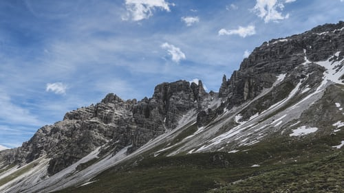
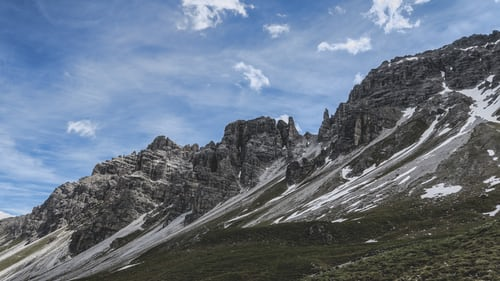

Sept 19 - 29 - Deluxe Haute Route- Chamonix to Zermatt - Classic trek has a new standard - SOLD OUT Sept 26 - Oct 5 - Scenic Alps by Rail- The Grand Train Tour of Switzerland - SOLD OUT Sept 29 - Oct 5 - Discover Swiss Cuisine - Italian Inspired - A culinary adventure in Lugano - SOLD OUT Oct 9 - 18 - Scenic Alps by Rail - The Grand Train Tour of Switzerland - ONLY 4 SPOT AVAILABLE Dec 3 - 11 - Christmas in Switzerland - Enjoy authentic Switzerland at its holiday best - AVAILABLE Dec 5 - 13 - Christmas in Switzerland - Enjov authentic Switzerland at its holidav best - AVAILABLE
Choose your trip
We choose hotels which offer a great location, a high standard of comfort and quality, and a solid value to our guests. These inns offer a superbly satisfying mix of a welcoming atmosphere, traditional cuisine, and authentic charm. They are typically small, independently-owned properties which reflect the character and hospitality of the surrounding alpine community. We know the owners personally, have a longstanding relationship with them, and we find they bend over backwards to provide our guests with an exceptional experience.


 
